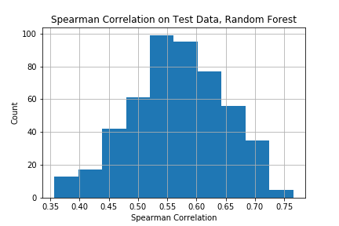
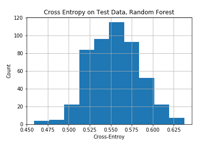

Jencir Lee jli14
This report contains final fixes with regard to Milestone or Poster. When figures differ, please use this report as final reference.
The Econometrics has established some standard time series models: Autoregressive Integrated Moving Average (ARIMA) model [Hamil1994], Regime-Switching model [Hamil1994], Generalized Autoregressive Conditional Heteroscedasticity (GARCH) model [Engle1982] [Boll1986], to name a few, for modelling macroeconomy, finanical markets, or general time series. For each model, we generallly have a tailored way of calibration and a specific theory for the consistency of the estimator.
In this study we propose to apply the Long Short-Term Memory (LSTM) model [Hoch1997] to the calibration of a few typical time series models. We'd pre-fix the parameters of the time series model, simulate trajectories from it, so that we would be able to understand the prediction performance in relation to the ground truth. In order to ascertain the LSTM's capability to truly "learn", we'd simulate time series with latent states, and see if the cell contents on the fitted LSTM explain well those latent states of the simulated time series.
Architecture We use the peepholed-version of LSTM, so that the Memory Cell $c_t$ would play a direct role on the values of the gates. We don't use dropout as we found it has no impact on our experiments.
Loss Function Given input series $\left\{x_t\right\}$, we perform a linear projection $g(x_t,h_t)$ to forecast $x_{t+1}$, $\forall t$. In this way we subsume linear models. We use two metrics for training: RMSE on the forecast error $\delta_t=x_{t+1}-g(x_t,h_t)$, and Quantile Loss for the 50%-quantile of $x_{t+1}$, which is $\delta_t\left(\pi-\mathbb{1}_{\{\delta_t\lt 0\}}\right)$, where $\pi=0.5$. For evaluation, we only report the RMSE on the test set. The first $b$ values on every time series are for "burn-in" and disregarded for optimisation, evaluation, or statistical test.
Training We train with SGD with Momentum, with the momentum parameter 0.5. This has equal performance as more complex algorithm. The step size slowly decreases across iterations.
We would evaluate the "learning" of latent states by the following procedure,
We first took the S&P 500 end-of-day price series since 1980, computes its log return, and fit a best ARIMA model to it. The selected model was ARIMA(2,0,2), Below are the parameters information and their standard errors. From the variance $\sigma^2$ of the innovation term we could compute $\sigma=0.0112$.
Coefficients:
ar1 ar2 ma1 ma2 intercept
0.0868 0.3667 -0.1150 -0.4068 3e-04
s.e. 0.1636 0.1446 0.1603 0.1427 1e-04
sigma^2 estimated as 0.0001248: log likelihood = 28662.03, aic = -57312.06
We then simulate 5000 trajectories with 1000 time steps using these parameters for training, and 500 such trajectories for test. The burn-in period $b=50$. If we denote one simulated trajectory by $\left\{y_t\right\}$, the innovation terms $\left\{\epsilon_t\right\}$, $t=1,\ldots,1000$, as we know all their values, we'd readily know the expectation $\widehat{y}_t=E\left(y_t|\mathcal{F}_{t^-}\right)$, where $\mathcal{F}_{t^-}$ denotes all the information prior $t$, immediately before the noise $\epsilon_t$ takes effect. We could study our forecast error w.r.t $\left\{\widehat{y}_t\right\}$, denoted by $\left\{\zeta_t\right\}$, $t=1,\ldots,1000$.
We also replace the Normal innovation distribution by a $t-$Distribution with $df=4.5$ to generate extra kurtosis, and by an Exponential Distribution to generate asymmetry for experiments. Both would be shifted and scaled when necessary to have zero mean and the same deviation as the Normal innovation distribution.
We could perform Spearman rank-based correlation between the forecast error $\left\{\zeta_t\right\}$ and $\left\{\epsilon_t\right\}$, and compute the p-value of the null for zero correlation. The p-value was always 0.3-0.8 for symmetric innovation terms for the two loss functions, which means our forecast error is always orthogonal to the generative noise. For the asymmetric Exponential Distribution the p-value decreases to 0.07.
This points to the benefit of performing model averaging, aided by the fact that both loss functions are convex w.r.t the prediction variable.
We did bootstrap study and found for both losses it usually takes 20 independent runs to produce an averaged model that could achieve a stable RMSE on the test set 0.004-0.005 (37%-44% $\sigma$). For non-Normal innovation distributions, the test RMSE of the averaged model is comparable to that for the Normal distribution.
When we increase further the number of independent runs, the RMSE on the test set wouldn't reduce proportionally, for the reason that although the forecast errors are orthogonal to the true innovation terms, there is non-zero correlation across the forecast error series empirically.
It is hard to assert anything "rigourously" about the unbiased-ness of the estimators: we can only use two-sample nonparametric test, and the statistical conclusion could be delicate due to the influence of the artificial other sample $y$. Still if we perform the Wilcoxon Test of the Forecast errors $\left\{\zeta_t\right\}$ against the other sample of all zeros, below is the p-value table from one run:
| Innov. Dist | RMSE Loss | Quantile Loss |
|---|---|---|
| Normal | 0 | 0.35 |
| $t_{4.5}$ | 0.005 | 0.011 |
| Exponential | 0 | 0 |
We have to take much salt interpreting these p-values. Nevertheless, in the following sections we only use the Quantile Loss to report results for its seemingly better un-biasedness.
We now simulate from an AR(2) process with the variance of the innovation terms following a mean-reverting process. Denote by $\phi_t$ the variance of the innovation term at $t$, then $$\begin{align} \log\phi_t&=\text{const. }\kappa+\text{mean-reverting }\pi_t,\\ \pi_t&=-\beta\pi_{t-1}+\xi_t,\quad\xi_t\text{ is the white noise} \end{align}$$
The parameters are fitted by MCMC based on the S&P 500 daily return series as in the previous section. The latent variable $\phi_t$ is continuous and we'll fit a Linear Regressor and Random Forest Regressor on it.
Generally the Spearman correlation between the predicted latent states and the ground truth is $0.55\pm 0.2$ for both regressors. We plot the histogram of the correlation per test trajectory, based on results of Random Forest Regressor.
We now simulate AR(2) series with the innovation terms following a two-regime switching process. The regime would follow a Markov Chain to switch between two states; the innovation would take sample from one of two Normal distributions as indicated by the regime. The parameters are again fitted by MCMC from the same historical data (the mixing was very poor however we tried to match the first two moments at least).
The latent variable, i.e. the regime is discrete and we'd use a Logistic Classifier and Random Forest Classifier to do the fitting. The Cross-Entropy was $0.64\pm 0.1$ for the Logistic Classifier, and $0.55\pm 0.1$ for the Random Forest. Below is the histogram of the Cross-Entropy per test trajectory, based on result of the Random Forest.
We fitted the generic LSTM model to simulated time series and tried to relate the latent states of the time series to the cell contents of the fitted LSTM. We found that model averaging tend to produce stable fitting error and that there was only moderate evidence that the LSTM truly "understood" and learnt the internal structure of the time seris.